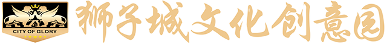
万众创新 中国力量
分享快乐小城的故事——欧美城

公司简介
欧美城文化小镇由振业集团投资并创立，项目主体公司欧美城文化（北京）股份有限公司于2015年在全国中小企业股份转让系统挂牌上市，证券简称：欧美城，证券代码：430173。欧美城总部设在北京，进行联盟合作招商和品牌、商业模式输出，布局全国。
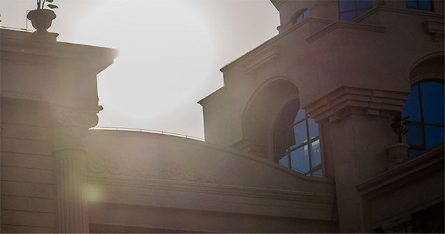
发展历程
2012
创立并启动欧美城文化小镇项目
正式开始文化娱乐版块的探索之路
2013.11.8
汕头欧美城盛大开业
在粤东乃至广东产生巨大影响
2014.11.9
布局全国样板工程
惠州欧美城动工兴建
2015
收购新三板挂牌上市企业
证券简称：欧美城
证券代码：430173
2016.6.15
惠州欧美城主体建筑顺利封顶
公司举行封顶庆典及答谢宴
2017.5.30
欧美城
进入新三板创新层
2018.8
惠州欧美城开始试业
商业模式
◆
"整合资源，对接共赢"的大平台战略思路，实现跨界合作共赢
◆
"互联网+体验式”的现代服务业、高新科技、教育“三位一体”的孵化基地
◆
特色文化产业链模式发展，打造新常态下的新业态

荣誉奖项
◆
荣获“北京中关村高新科技企业”认证
◆
获评2016年年度“全国股转100强企业（新三板）最具成长性十佳企业”荣誉称号
◆
获评2016年年度“全国战略转型十佳企业”荣誉称号
◆
2017年年中，惠州欧美城、汕头欧美城双双通过市级文化产业园区认定
◆
2017年11月，获评第三届中国新三板高峰会暨企业风云榜“最具发展潜力企业”
◆
2018年1月，获评第二届中国新三板发展论坛“最具发展潜力公司”
◆
2018年5月，惠州欧美城被认定“惠州市科普教育基地”
◆
2018年6月，惠州欧美城被认定“惠州市文化创意园区”,“惠州市海龟科普教育示范窗口”

全国样板
2014年11月，全国样板工程欧美城文化小镇惠州站动工兴建，项目位于广东惠州惠城区金龙大道主干轴，占地面积约20万平方米，总建筑面积近30万平方米，拥有海洋文化、婚博文化、赛车文化、影视文化、演艺文化、花海艺术、儿童科普、娱乐文化、体育文化、人才培养等13个全体验式主业态项目 。万众瞩目的惠州欧美城文化小镇项目已于2018年8月闪亮登场！

13个主业态
海洋文化主题
欧美城与国内外著名团队携手合作，其中引入奥斯卡金像奖、电影“少年派奇幻漂流”CG技术制作团队协力打造当前最高科技的海洋体验馆。以海底沉落的宫殿、海盗沉船等神奇情景作为海底世界景观，游客不仅可以观赏海底美人鱼唯美表演、大鲸鱼惊险冲击碰撞、巨型章鱼凶猛吸盘、海狮高空炸水逗趣等表演，还可以身临其境，感受5D无水海洋的神秘空间及观赏各类海洋生物，结合科普引领游客一起探索神秘的海底世界。
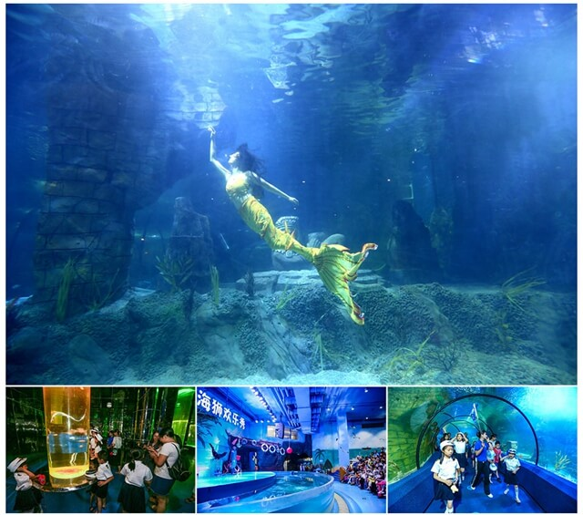
婚博文化主题
欧美城婚博中心是以欧式奢华的建筑风格为主调，结合国际主流设计理念，由国内外专业婚庆运营团队打造，全程定制服务。联合众多入驻企业为客户提供一站式大型婚庆策划、婚礼仪式堂预定、婚宴宴请、婚车租赁、蜜月之旅、室内室外婚纱摄影等时尚新型服务，并配套户外草坪婚礼、空中花园婚礼、海洋主题婚礼等个性化婚礼服务。

赛车文化主题
格林披治致力打造中国最具实力的赛车运动孵化基地，与欧美城合作，以法国Sodi国际卡丁车赛道为主，配套游泳池、足球场、健身房及相关配套服务项目。延伸运动达人俱乐部，运动休闲吧，组织发烧友Party、竞技交流会，不仅迎合城市运动健身新风气，同时满足爱好者享受运动带来的愉悦生活。
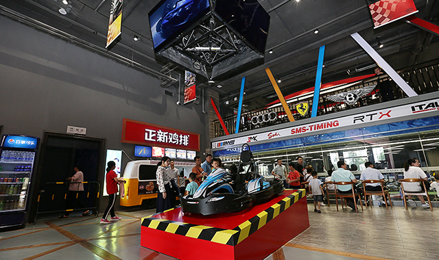
演艺文化主题
5000平米胜利宫殿和上万平米的胜利广场完全胜任各种大型文化艺术表演、舞台剧、时尚音乐会等，彰显了欧美城文化内涵的魅力，并发挥其强大集客功能带来的平台式经济效应。

餐饮文化主题
以欧式个性化设计理念，打造5000平米空间欧美城美食天地，汇聚各国、各地方特色美食；同时其它各馆配套专属私房菜、中西特色餐饮及冷饮休闲区等，满足餐饮全系列需求。

体育文化主题
欧美城拥有空中足球场、空中网球场、泳池、健身房、攀岩等多项运动场所，可满足社会各界人士对举办运动赛事或运动休闲活动的不同需求。

商学院
欧美城商学院定位为教育孵化基地，对接国内外著名教育机构，从而发现人才、提升人才、孵化企业、助力企业，实现人企资源对接、合作共赢的社会效应，以人文占据至高点，为欧美城可持续发展战略打好基础、埋下伏笔。

文化交流平台
会所设有客房、会议室、私房菜、西餐厅、超市、养生堂、茶道、主题KTV等多个休闲场所，满足商品展销展览、组织大型会议、大型宴会等活动，形成与各主题业态互动配套。同时汇集大量高端客户资源，入驻银行/金融/企业/协会/旅行社等办公场地，实现与商务相结合，形成中小型企业发展促进平台，力争推动孵化的企业走向资本市场。
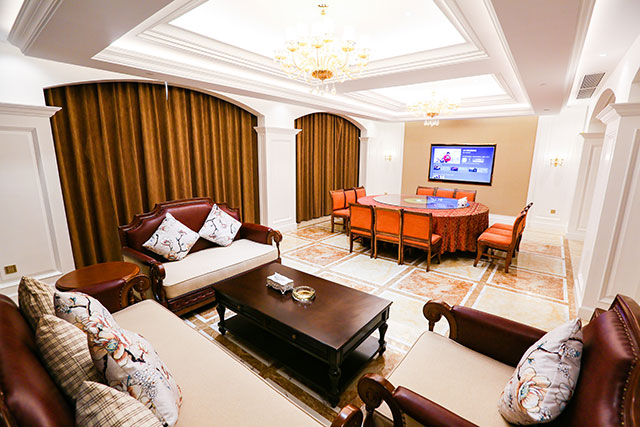
慈善公益
缘善公益楼为广东省缘善公益基金会总会，属非盈利性机构，致力传播真善美，携手公益，回报社会。同时，大楼配设礼堂、文化展示等功能楼层。
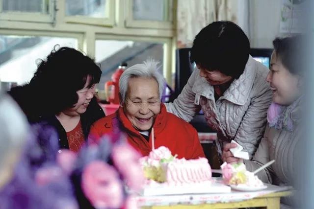
影视文化主题
（目前尚未开放）
欧美城与中影迪斯尼携手合作，打造集豪华3D数字影厅和放映厅、最高科技全息影厅、电影主题街、电影明星蜡像馆、电影时光隧道、科技互动区、光影概念展区、电影衍生品超市、书吧、餐吧、咖啡吧为一体的主题影城。引领观众走进电影的世界，感受电影场景互动体验之旅。这里，让电影更生动的还原真实世界，并创造神奇的未知世界。
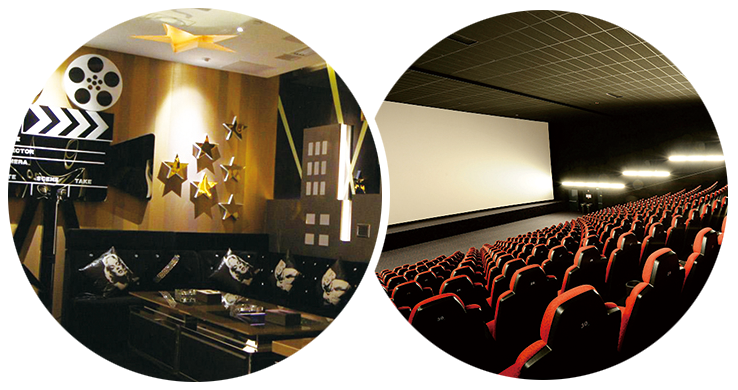
花海艺术文化主题
（目前尚未开放）
占地5万平方米，由著名设计团队摩玛兄弟精心打造五颜六色花的海洋，匠心编成各类小动物、卡通人物及各式情景主题等，并投建首家萌宠动物娱乐园，这不仅是大量游客休闲度假、观赏拍摄的好去处，也是摄影师追棒的最佳室外婚纱拍摄基地，从而实现欧美城提倡生态化、野生动物科普教育、附加值消费的目标。
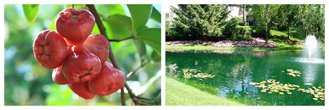
娱乐文化主题
（目前尚未开放）
“多奇世界”以VR、AR、3D等打造高科技虚拟世界，内容涵盖刺激战斗的宇宙特工局、惊悚屋+恐怖点心屋、机械游戏区等娱乐功能，是当代年轻人疯狂热捧的动感空间、奇异体验、奇幻旅程的最高科技娱乐文化场所。
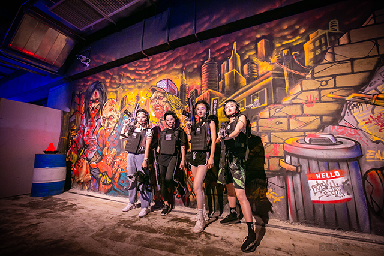
儿童科普主题
（目前尚未开放）
以数字多媒体及高端科技展现的全球首个室内极地数字动物园，是知名企业“多奇国际”联合好莱坞专业团队共同打造的儿童科普娱乐业态，集游乐、创意、科普、体验为一体。世界各地著名极地动物明星齐聚的虚拟极地馆、企鹅们的极地乐园、白熊主题餐厅等，游客们不仅可观看精彩的极地动物表演，也可亲身体验南北极的环境与气候。
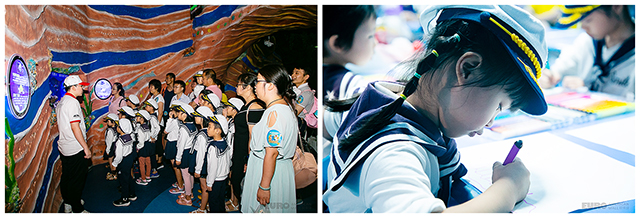
整合资源 共赢未来
分享快乐小城的故事——欧美城
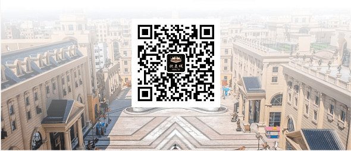